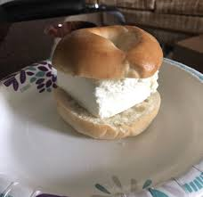

Lab 4 - Psuedocoding & Problem-solving
Challenge
The challenge of this lab was to take day-to-day tasks and turn them into Js comments.
Problems
I had problems with typing out my psuedocode and js comments. I didn't know how specific my instructions should/shouldn't be. I was also unsure of how comments should be worded for Js. I wonder even now if any of my comments make sense.
Reflection
I am a little confused on how this assignment is to help us, but I do hope to learn how to code a Jack-in-the-Box in Java! I am excited to learn java and very nervous about having problems and falling behind.
Results
 // Jack-in-the-Box
// An implementation of the game
// Hilary Cervantes